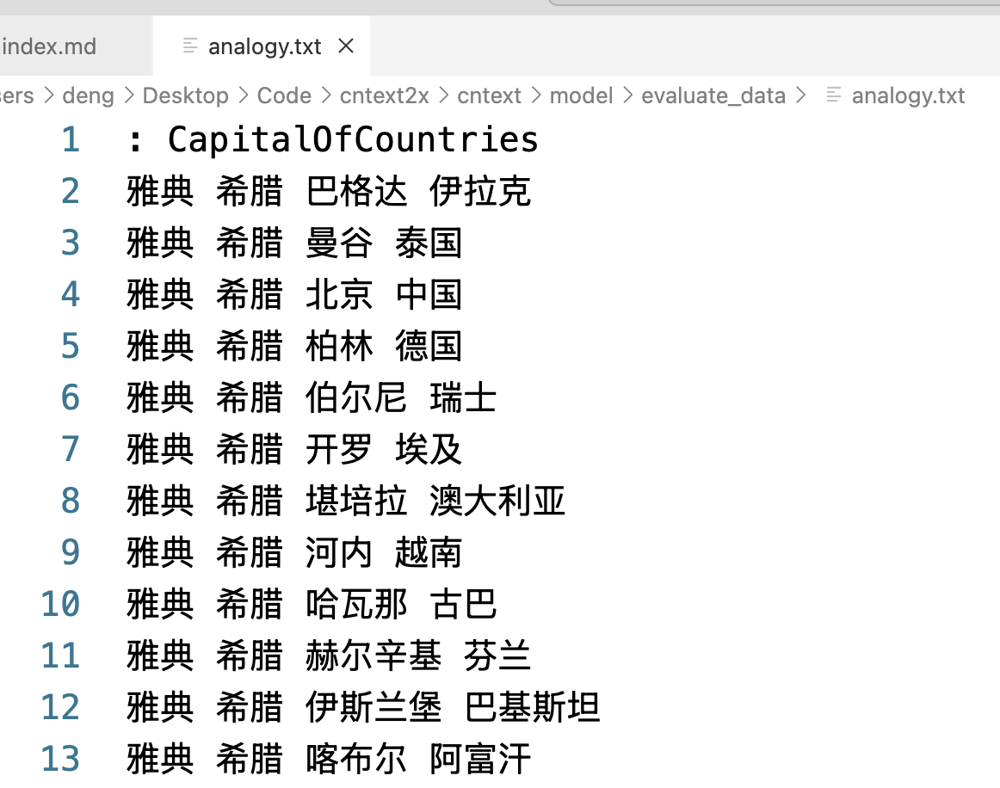
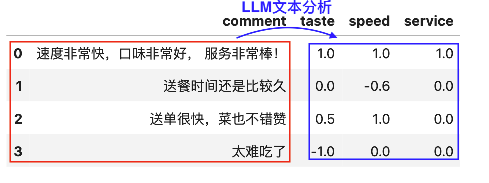

cntext 是大邓开发维护的中英文文本分析库，内置有多重词典和常用函数， 包括
- 免费的 1.x 版， 更新至 1.9。
- 收费的 2.x 版， 更新至 2.1.6。
加大邓 WeChat: 372335839， 备注「姓名-学校-专业」， 100 元领取 cntext-2.1.6-py3-none-any.whl 文件。本文出现的 cntext，默认均为 2.x 版本。
安装 cntext
所有 cntext2.x 安装方法类似， 以目前 cntext2.1.6 为例，将 cntext-2.1.6-py3-none-any.whl 放置于桌面，打开 cmd (苹果电脑打开 terminal)， 输入 cd desktop
cd desktop
之后在 cmd (苹果电脑打开 terminal) 中使用 pip3 安装
pip3 install cntext-2.1.6-py3-none-any.whl
需要注意， cntext2.x 使用环境为 Python3.9 ~ 3.12,如安装失败，问题可能出在 python 版本问题； 文章开头和文章末都有 cntext-2.1.6-py3-none-any.whl 获取方式说明。
功能模块
cntext 含 io、model、stats、mind 五个模块
- 导入数据用 io
- 训练模型扩展词典用 model
- 统计词频、情感分析、相似度等用 stats
- 可视化模块 plot
- 态度认知文化变迁用 mind
- 大模型 LLM
函数部分加粗的为常用函数。
| 模块 | 函数 | 功能 |
|---|---|---|
| io | ct.get_cntext_path() | 查看 cntext 安装路径 |
| io | ct.get_dict_list() | 查看 cntext 内置词典 |
| io | ct.get_files(fformat) |
查看符合 fformat 路径规则的所有的文件 |
| io | ct.detect_encoding(file, num_lines=100) |
诊断 txt、csv 编码格式 |
| io | ct.read_yaml_dict(yfile) | 读取内置 yaml 词典 |
| io | ct.read_pdf(file) | 读取 PDF 文件 |
| io | ct.read_docx(file) | 读取 docx 文件 |
| io | ct.read_file(file, encodings) | 读取文件 |
| io | ct.read_files(fformat, encoding) | 读取符合 fformat 路径规则的所有的文件，返回 df |
| io | ct.extract_mda(text, kws_pattern) | 提取 A 股年报中的 MD&A 文本内容。如果返回'',则提取失败。 |
| io | ct.traditional2simple(text) | 繁体转简体 |
| io | ct.fix_text(text) | 将不正常的、混乱编码的文本转化为正常的文本。例如全角转半角 |
| io | ct.fix_contractions(text) |
英文缩写(含俚语表达)处理， 如 you’re -> you are |
| model | ct.Word2Vec(corpus_file, encoding, lang=‘chinese’, …) | 训练 Word2Vec |
| model | ct.GloVe(corpus_file, encoding, lang=‘chinese’, …) | GloVe, 底层使用的 Standfordnlp/GloVe |
| model | ct.evaluate_similarity(wv, file=None) | 使用近义法评估模型表现，默认使用内置的数据进行评估。 |
| model | ct.evaluate_analogy(wv, file=None) | 使用类比法评估模型表现，默认使用内置的数据进行评估。 |
| model | ct.glove2word2vec(glove_file, word2vec_file) | 将 GLoVe 模型.txt 文件转化为 Word2Vec 模型.txt 文件； 一般很少用到 |
| model | ct.load_w2v(wv_path) | 读取 cntext2.x 训练出的 Word2Vec/GloVe 模型文件 |
| model | ct.expand_dictionary(wv, seeddict, topn=100) | 扩展词典, 结果保存到路径[output/Word2Vec]中 |
| model | ct.SoPmi(corpus_file, seed_file, lang='chinese') |
共现法扩展词典 |
| stats | ct.word_count(text, lang='chinese') |
词频统计 |
| stats | readability(text, lang='chinese', syllables=3) |
文本可读性 |
| stats | ct.sentiment(text, diction, lang=‘chinese’) | 无(等)权重词典的情感分析 |
| stats | ct.sentiment_by_valence(text, diction, lang='chinese') |
带权重的词典的情感分析 |
| stats | ct.word_in_context(text, keywords, window=3, lang=‘chinese’) | 在 text 中查找 keywords 出现的上下文内容(窗口 window)，返回 df |
| stats | ct.epu() | 使用新闻文本数据计算经济政策不确定性 EPU，返回 df |
| stats | ct.fepu(text, ep_pattern='', u_pattern='') | 使用 md&a 文本数据计算企业不确定性感知 FEPU |
| stats | ct.semantic_brand_score(text, brands, lang=‘chinese’) | 衡量品牌（个体、公司、品牌、关键词等）的重要性 |
| stats | ct.cosine_sim(text1, text2, lang=‘chinese’) | 余弦相似度 |
| stats | ct.jaccard_sim(text1, text2, lang='chinese') |
Jaccard 相似度 |
| stats | ct.minedit_sim(text1, text2, lang='chinese') |
最小编辑距离 |
| stats | ct.word_hhi(text) |
文本的赫芬达尔-赫希曼指数 |
| plot | ct.matplotlib_chinese() |
支持 matplotlib 中文绘图 |
| plot | ct.lexical_dispersion_plot1(text, targets_dict, lang, title, figsize) |
对某一个文本 text， 可视化不同目标类别词 targets_dict 在文本中出现位置 |
| plot | ct.lexical_dispersion_plot2(texts_dict, targets, lang, title, figsize) |
对某几个文本 texts_dict， 可视化某些目标词 targets 在文本中出现相对位置(0~100) |
| mind | ct.generate_concept_axis(wv, words1, words2) |
生成概念轴向量。 |
| mind | tm = ct.Text2Mind(wv) |
单个 word2vec 内挖掘潜在的态度偏见、刻板印象等。tm 含多重方法 |
| mind | ct.sematic_projection(wv, words, c_words1, c_words2) |
测量语义投影 |
| mind | ct.project_word(wv, a, b) |
计算词语 a 在词语 b 上的投影 |
| mind | ct.sematic_distance(wv, words, c_words1, c_words2) |
测量语义距离 |
| mind | ct.divergent_association_task(wv, words) |
测量发散思维(创造力) |
| mind | ct.discursive_diversity_score(wv, words) |
测量语言差异性(认知差异性) |
| mind | ct.procrustes_align(base_wv, other_wv) | 两个 word2vec 进行语义对齐，可反应随时间的社会语义变迁 |
| LLM | analysis_by_llm(text, prompt, base_url, api_key, model_name, temperature, output_format) | 使用大模型进行文本分析 |
QuickStart
import cntext as ct
print('当前cntext版本: ', ct.__version__)
help(ct)
Run
当前cntext版本: 2.1.6
Help on package cntext:
NAME
cntext
PACKAGE CONTENTS
io
mind
model
stats
llm
...
一、IO 模块
| 模块 | 函数 | 功能 |
|---|---|---|
| io | ct.get_dict_list() | 查看 cntext 内置词典 |
| io | ct.read_yaml_dict(yfile) | 读取内置 yaml 词典 |
| io | ct.detect_encoding(file, num_lines=100) |
诊断 txt、csv 编码格式 |
| io | ct.get_files(fformat) |
查看符合 fformat 路径规则的所有的文件 |
| io | ct.read_yaml_dict(yfile) | 读取内置 yaml 词典 |
| io | ct.read_pdf(file) | 读取 PDF 文件 |
| io | ct.read_file(file, encoding) | 读取文件 |
| io | ct.read_files(fformat, encoding) | 读取符合 fformat 路径规则的所有的文件，返回 df |
| io | ct.extract_mda(text, kws_pattern) | 提取 A 股年报中的 MD&A 文本内容。如果返回'',则提取失败。 |
| io | ct.traditional2simple(text) | 繁体转简体 |
| io | ct.fix_text(text) | 将不正常的、混乱编码的文本转化为正常的文本。例如全角转半角 |
| io | ct.fix_contractions(text) |
英文缩写(含俚语表达)处理， 如 you’re -> you are |
1.1 get_dict_list()
查看 cntext 内置词典
import cntext as ct
ct.get_dict_list()
Run
['zh_common_NTUSD.yaml',
'zh_common_DUTIR.yaml',
'enzh_common_StopWords.yaml',
'en_valence_Concreteness.yaml',
'en_common_LoughranMcDonald.yaml',
'zh_common_FinanceSenti.yaml',
'zh_common_FLS.yaml',
'zh_common_TsinghuaPraiseDegrade.yaml',
'zh_common_FEPU.yaml',
'en_common_ANEW.yaml',
'en_common_NRC.yaml',
'zh_valence_ChineseEmoBank.yaml',
'zh_valence_SixSemanticDimensionDatabase.yaml',
'zh_common_FinacialFormalUnformal.yaml',
'zh_common_LoughranMcDonald.yaml',
'enzh_common_AdvConj.yaml',
'en_common_SentiWS.yaml',
'zh_common_Digitalization.yaml',
'en_common_LSD2015.yaml',
'zh_common_HowNet.yaml',
'zh_common_EPU.yaml']
1.2 内置 yaml 词典
| pkl 文件 | 词典 | 语言 | 功能 |
|---|---|---|---|
| zh_valence_ChineseEmoBank.yaml | 中文情感词典，含效价valence和唤醒度arousal。在 cntext 中，我们只使用了 CVAW 词表(单词)，其他词典如 CVAP, CVAS, CVAT 没有纳入到 ChineseEmoBank.pkl. |
Chinese | 效价valence和唤醒度arousal |
| zh_common_DUTIR.yaml | 大连理工大学情感本体库 | 中文 | 七大类情绪，哀, 好, 惊, 惧, 乐, 怒, 恶 |
| zh_common_HowNet.yaml | 知网 Hownet 词典 | 中文 | 正面词、负面词 |
en_common_SentiWS.yaml |
SentimentWortschatz (SentiWS) | 德文 | 正面词、负面词； |
| zh_common_FinacialFormalUnformal.yaml | 金融领域正式、非正式；积极消极 | 中文 | formal-pos、 formal-neg； unformal-pos、 unformal-neg |
en_common_ANEW.yaml |
英语单词的情感规范 Affective Norms for English Words (ANEW) | 英文 | pleasure, arousal, dominance |
en_common_LSD2015.yaml |
Lexicoder Sentiment Dictionary (2015) | 英文 | 正面词、负面词 |
en_common_NRC.yaml |
NRC Word-Emotion Association Lexicon | 英文 | 细粒度情绪词； |
| zh_valence_SixSemanticDimensionDatabase.yaml | 通用中英文六维语义情感词典, 含 17940 个中文词的六维度词库， 且每个维度有权重。 | 中文 | vision、socialness、emotion、time、space、motor |
enzh_common_AdvConj.yaml |
副词连词 | 中、英 | |
| enzh_common_StopWords.yaml | 中英文停用词 | 中、英 | 停用词 |
| en_valence_Concreteness.yaml | 英文具体性词典 | English | word & concreateness score |
| zh_common_LoughranMcDonald.yaml | 中文 LoughranMcDonald 词典 | 中文 | 正面、负面词 |
| zh_common_Digitalization.yaml | 管理世界|吴非(2021)数字化词典 | 中文 | 含人工智能技术、大数据技术、云计算技术、区块链技术、数字技术应用等关键词列表。 |
| en_common_LoughranMcDonald.yaml | 英文 LoughranMcDonald 词典 | 英文 | 金融 LM 情绪词典 2018 年版本，含七个词表，分别是 Negative, Positive, Uncertainty, Litigious, StrongModal, WeakModal, Constraining |
| zh_common_FLS.yaml | 业绩说明会前瞻性词典集 | 中文 | 含 174 个词语 |
| zh_common_RhetoricalNationalism.yaml | 修辞民族主义 | 中文 | 含四个维度，民族自豪感、民族复兴、企业角色、排外主义，每个维度 100 个词。 |
1.3 read_dict_yaml()
使用 cntext 读取 .yaml 词典文件； 返回的信息包括
- Name 词典的名字
- Desc 词典的含义、概念解释
- Refer 词典文献出处
- Category 词典 Dictionary 的关键词
- Dictionary 词典, python 字典格式
import cntext as ct
print(ct.read_yaml_dict('zh_common_Digitalization.yaml'))
Run
{'Name': '中文数字化词典',
'Desc': '基于这篇论文，构建了中文数字化词典，含人工智能技术、大数据技术、云计算技术、区块链技术、数字技术应用等关键词列表。 ', 'Refer': '吴非,胡慧芷,林慧妍,任晓怡. 企业数字化转型与资本市场表现——来自股票流动性的经验证据[J]. 管理世界,2021,37(07):130-144+10.',
'Category': ['Artificial_Intelligence', 'Big_Data', 'Cloud_Computing', 'Block_Chains', 'Usage_of_Digitalization'],
'Dictionary':
{'Artificial_Intelligence': ['人工智能', '商业智能', '图像理解', '投资决策辅助系统', '智能数据分析', '智能机器人', '机器学习', '深度学习', '语义搜索', '生物识别技术', '人脸识别', '语音识别', '身份验证', '自动驾驶', '自然语言处理'],
'Big_Data': ['大数据', '数据挖掘', '文本挖掘', '数据可视化', '异构数据', '征信', '增强现实', '混合现实', '虚拟现实'],
'Cloud_Computing': ['云计算', '流计算', '图计算', '内存计算', '多方安全计算', '类脑计算', '绿色计算', '认知计算', '融合架构', '亿级并发', 'EB级存储', '物联网', '信息物理系统'],
'Block_Chains': ['区块链', '数字货币', '分布式计算', '差分隐私技术', '智能金融合约'],
'Usage_of_Digitalization': ['移动互联网', '工业互联网', '移动互联', '互联网医疗', '电子商务', '移动支付', '第三方支付', 'NFC支付', '智能能源', 'B2B', 'B2C', 'C2B', 'C2C', 'O2O', '网联', '智能穿戴', '智慧农业', '智能交通', '智能医疗', '智能客服', '智能家居', '智能投顾', '智能文旅', '智能环保', '智能电网', '智能营销', '数字营销', '无人零售', '互联网金融', '数字金融', 'Fintech', '金融科技', '量化金融', '开放银行']}}
1.4 detect_encoding()
ct.detect_encoding(file)
通过读取前 num_lines 来识别 txt/csv 文件的编码格式
- file 文件路径
import cntext as ct
#读取data文件夹下的【三体.txt】
#识别编码方式
ct.detect_encoding(file='data/三体.txt')
Run
utf-8
1.5 get_files(fformat)
- fformat fformat 格式支持 txt/pdf/docx/xlsx/csv 等。
*表示通配符
查看符合 fformat 路径规则的所有的文件， fformat 格式支持 txt/pdf/docx/xlsx/csv 等。 *表示通配符
| fformat 格式 | 识别的文件 |
|---|---|
*.txt |
匹配当前代码所在路径内的所有 txt |
*.pdf |
匹配当前代码所在路径内的所有 pdf |
data/*.txt |
匹配「文件夹 data」内所有的 txt |
#查看【文件夹data】内所有的 txt文件。
ct.get_files(fformat='data/*.txt')
Run
['data/三体.txt',
'data/santi.txt',
'data/w2v_corpus.txt',
'data/sopmi_corpus.txt',
'data/brown_corpus.txt',
'data/sopmi_seed_words.txt']
1.6 read_pdf
读取 PDF，返回文本内容
ct.read_pdf(file)
- file PDF 文件路径
import cntext as ct
text = ct.read_pdf('格力电器2023.pdf')
print(text)
Run
珠海格力电器股份有限公司 2023年年度报告全文
珠海格力电器股份有限公司
2023年年度报告
二〇二四年四月
珠海格力电器股份有限公司 2023年年度报告全文
第 2 页 共 249 页 第一节 重要提示、目录和释义
公司董事会、监事会及董事、监事、高级管理人员保证年度报告内容
的真实、准确、完整，不存在虚假记载、误导性陈述或重大遗漏，并承担
个别和连带的法律
......
1.7 read_docx
读取 docx，返回文本内容
ct.read_docx(file)
- file docx 文件路径
import cntext as ct
text = ct.read_docx('test.docx')
text
Run
这是来自test.docx里内容
1.8 read_file()
ct.read_file(file, encoding='utf-8')
- file 待读取的文件路径； 支持 txt、pdf、docx、xlsx、xls， 返回 DataFrame(含 doc 和 file 两个字段)。
- encoding 待读取文件的编码方式
以 data/三体.txt 为例
import cntext as ct
#默认encoding='utf-8'
#sdf = ct.read_file(file='data/三体.txt')
sdf = ct.read_file(file='data/三体.txt', encoding='utf-8')
sdf

1.9 read_files()
ct.read_files(fformat, encoding='utf-8'）
批量读取符合 fformat 格式的所有文件数据，返回 DataFrame(含 doc 和 file 两个字段)。
读取[文件夹 data 里所有 txt]
import cntext as ct
#默认encoding='utf-8'
#ddf = ct.read_files(fformat='data/*.txt')
ddf = ct.read_files(fformat='data/*.txt', encoding='utf-8')
ddf

1.10 extract_mda
提取 A 股年报中的 MD&A 文本内容。如果返回'',则提取失败。
ct.extract_mda(text, kws_pattern='')
- text 中国 A 股年报原始文本
- kws_pattern 管理层讨论与分析章节识别关键词的模板。cntext 内置的 kws_pattern 内容如下
kws_pattern = '董事会报告|董事会报告与管理讨论|企业运营与管理评述|经营总结与分析|管理层评估与未来展望|董事局报告|管理层讨论与分析|经营情况讨论与分析|经营业绩分析|业务回顾与展望|公司经营分析|管理层评论与分析|执行摘要与业务回顾|业务运营分析'
import cntext as ct
text = ct.read_pdf('格力电器2023.pdf')
mda_text = ct.extract_mda(text)
print(mda_text)
Run
'管理层讨论与分析 \n一、报告期内公司所处行业情况 \n（一）行业发展现状 \n1.消费领域 ——家电行业稳定增长，空调市场恢复明显 \n2023年，中国经济保持了整体恢复向好的态势，激发消费是稳增长的重中之重。国家鼓励和推动消费品以旧换\n新，促进消费经济大循环，加速更新需求释放，推动高能效产品设备销售和出口增长，进一步激发绿色消费潜力。 \n1）家电行业稳定增长 \n2023年，国内经济恢复明显，家电行业稳定增长。根据全国家用电器工业信息中心发布的《 2023年中国家电\n行业年度报告》，家电行业外销明显增长，出口规模为 6,174亿元，同比增长 9.9%；国内市场实现稳步增长，销售\n规模为7'
.......
.......
以2001 年~2023 会计年度报告数据集为例， 查看 extract_mda 的抽取 mda 的能力。
import glob
import cntext as ct
print('extract_mda识别能力')
for year in range(2001, 2024):
num = 0
for file in glob.glob(f'年报txt/{year}/*.txt'):
mda_text = ct.extract_mda(open(file).read())
if mda_text!='':
num = num + 1
volume = len(glob.glob(f'年报txt/{year}/*.txt'))
ratio = num/volume
print(f'{year}: {ratio:.2f}')
Run
2001: 0.24
2002: 0.37
2003: 0.43
2004: 0.70
2005: 0.77
2006: 0.78
2007: 0.79
2008: 0.77
2009: 0.79
2010: 0.82
2011: 0.84
2012: 0.96
2013: 0.95
2014: 0.98
2015: 0.98
2016: 0.99
2017: 0.98
2018: 0.98
2019: 0.99
2020: 0.97
2021: 0.98
2022: 0.99
2023: 0.99
建议各位用最近 10 年的年报数据，通过 extract_mda 提取 mda 文本，或者直接购买 [数据集 | 2001-2023 年 A 股上市公司年报&管理层讨论与分析](数据集 | 2001-2023 年 A 股上市公司年报&管理层讨论与分析)
1.11 traditional2simple()
繁体转简体
ct.traditional2simple(text, mode='t2s')
- text 待转换的文本
- mode 转换模式， 默认 mode=‘t2s’繁转简; mode 还支持 s2t
import cntext as ct
text = '簡體漢字'
ct.traditional2simple(text)
Run
'简体汉字'
text = '简体汉字'
ct.traditional2simple(text, mode='s2t')
Run
'簡體漢字'
1.12 fix_text()
将不正常的、混乱编码的文本转化为正常的文本。例如全角转半角
import cntext as ct
raw_text = '今日起可中遇到技术问题，可以拨打电话０３７１－６６３２１９９１、６６３２１９７３咨询。'
text = ct.fix_text(raw_text)
text
Run
今日起可中遇到技术问题，可以拨打电话0371-66321991、66321973咨询。
1.13 fix_contractions(text)
将英文缩写(含俚语表达)转化为完整的表达，如如
- you're -> you are
- yall -> you all
- gotta -> got to
...
import cntext as ct
raw_text = "yall're happy now"
text = ct.fix_contractions(raw_text)
text
Run
"you all are happy now"
二、Stats 模块
| 模块 | 函数 | 功能 |
|---|---|---|
| stats | ct.word_count(text, lang='chinese') |
词频统计 |
| stats | ct.readability(text, lang='chinese') |
文本可读性 |
| stats | ct.sentiment(text, diction, lang=‘chinese’) | 无(等)权重词典的情感分析 |
| stats | ct.sentiment_by_valence(text, diction, lang='chinese') |
带权重的词典的情感分析 |
| stats | ct.word_in_context(text, keywords, window=3, lang=‘chinese’) | 在 text 中查找 keywords 出现的上下文内容(窗口 window)，返回 df |
| stats | ct.epu(text, e_pattern, p_pattern, u_pattern) | 使用新闻文本数据计算经济政策不确定性 EPU，返回 df |
| stats | ct.fepu(text, ep_pattern='’, u_pattern='') | 使用 md&a 文本数据计算企业不确定性感知 FEPU |
| stats | ct.semantic_brand_score(text, brands, lang=‘chinese’) | 衡量品牌（个体、公司、品牌、关键词等）的重要性 |
| stats | ct.cosine_sim(text1, text2, lang=‘chinese’) | 余弦相似度 |
| stats | ct.jaccard_sim(text1, text2, lang='chinese') |
Jaccard 相似度 |
| stats | ct.minedit_sim(text1, text2, lang='chinese') |
最小编辑距离 |
| stats | ct.word_hhi(text) |
文本的赫芬达尔-赫希曼指数 |
2.1 word_count()
统计词频， 返回 Counter(类似于 python 字典) ； 支持中英文
ct.word_count(text, lang='chinese', return_df=False)
- text 待分析的文本字符串
- lang 文本的语言类型， 中文 chinese、英文 english，默认中文。
- return_df 返回结果是否为 dataframe，默认 False
import cntext as ct
text = '致力于致力于以零文章处理费或订阅费发布优质研究软件。'
#ct.word_count(text, lang='chinese')
ct.word_count(text)
Run
Counter({'致力于': 2,
'文章': 1,
'处理费': 1,
'订阅费': 1,
'发布': 1,
'优质': 1,
'研究': 1,
'软件': 1})
ct.word_count(text, return_df=True)
2.2 readability()
ct.readability(text, lang='chinese', syllables=3, return_series=False)
计算文本可读性常见指标； 含 Gunning Fog Index、 SMOG Index、Coleman Liau Index、 Automated Readability Index(ARI)、Readability Index(Rix)； 指标越大，复杂度越高，文本的可读性越差。
- text 待分析的文本字符串
- lang 文本的语言类型， 中文 chinese、英文 english，默认中文。
- syllables 音节数(汉字数)大于等于 syllables 为复杂词. 默认值为 3
- return_series: 计算结果是否输出为 pd.Series 类型，默认为 False
Gunning Fog Index = 0.4 * (Total_Words/Total_Sentences + 100 * Complex_Words/Total_Words)
SMOG Index = 1.0430 * sqrt(Complex_Words/Total_Sentences) * 30 + 3.1291
Coleman-Liau Index = 0.0588 * (100*Total_Letters/Total_Words) -0.296*(100*Total_Sentences/Total_Words) - 15.8
Automated Readability Index(ARI) = 4.71 * (Total_Characters/Total_Words) + 0.5*(Total_Words/Total_Sentences) - 21.43
Readability Index(RIX) = Complex_Words * (6 + Total_characters) / Total_Sentences
import cntext as ct
text = '致力于以零文章处理费或订阅费发布优质研究软件。'
ct.readability(text, lang='chinese', syllables=3)
Run
{'fog_index': 120.4,
'flesch_kincaid_grade_level': 20.2,
'smog_index': 57.32,
'coleman_liau_index': 83.96,
'ari': 87.4,
'rix': 87.0}
2.3 sentiment(text, diction, lang)
常见的情感分析默认情绪词无(等)权重， 通过统计词语个数来反应情感信息。
sentiment(text, diction, lang='chinese', return_series=False)
- text 待分析的文本字符串
- diction 格式为 Python 字典类型。形如下面的案例
- lang 文本的语言类型， 中文 chinese、英文 english，默认中文。
- return_series 计算结果是否输出为 pd.Series 类型，默认为 False
import cntext as ct
diction = {'pos': ['高兴', '快乐', '分享'],
'neg': ['难过', '悲伤'],
'adv': ['很', '特别']}
text = '我今天得奖了，很高兴，我要将快乐分享大家。'
ct.sentiment(text=text,
diction=diction,
lang='chinese')
Run
{'pos_num': 3,
'neg_num': 0,
'adv_num': 1,
'stopword_num': 8,
'word_num': 14,
'sentence_num': 1}
2.4 sentiment_by_valence()
ct.sentiment_by_valence(text, diction, lang='chinese', return_series=False)
- text 待分析的文本字符串
- diction 格式为 Python 字典类型。形如下面的案例
- lang 文本的语言类型， 中文 chinese、英文 english，默认中文。
- return_series 计算结果是否输出为 pd.Series 类型，默认为 False
常见的情感分析是无(等)权重, 但实际上不同的词语所携带的情感信息的强度差异是很大的。据此学者们开发出很多带权重的词典，例如
- 英文具体性词典 en_valence_Concreteness.yaml， 词典中每个词都有一个 concreteness 值
- 中文六维度语义词典 zh_valence_SixSemanticDimensionDatabase.yaml, 每个中文词有六个值。
以具体性为例， 语言具体性 Concreteness描述了一个词在多大程度上是指一个实际的、有形的或“真实的”实体，以一种更具体、更熟悉、更容易被眼睛或心灵感知的方式描述对象和行为（即，可想象或生动；Brysbaert, Warriner, and Kuperman 2014; Semin and Fiedler 1988)
import cntext as ct
import pandas as pd
concreteness_dict = ct.read_yaml_dict('en_valence_Concreteness.yaml')['Dictionary']
concreteness_dict
Run
{'roadsweeper': {'concreteness': 4.85},
'traindriver': {'concreteness': 4.54},
'tush': {'concreteness': 4.45},
'hairdress': {'concreteness': 3.93},
'pharmaceutics': {'concreteness': 3.77},
'hoover': {'concreteness': 3.76},
'shopkeeping': {'concreteness': 3.18},
'pushiness': {'concreteness': 2.48},
......
}
可能 **concreteness_dict**不够直观， 如果整理转化一下大概类似于

JCR2021 | 计算文本的语言具体性 文中提供了一个案例
reply = "I'll go look for that"
score=ct.sentiment_by_valence(text=reply,
diction=concreteness_dict,
lang='english')
score
Run
{'concreteness': 9.28,
'word_num': 6}
employee_replys = ["I'll go look for that",
"I'll go search for that",
"I'll go search for that top",
"I'll go search for that t-shirt",
"I'll go look for that t-shirt in grey",
"I'll go search for that t-shirt in grey"]
for idx, reply in enumerate(employee_replys):
score=ct.sentiment_by_valence(text=reply,
diction=concreteness_dict,
lang='english')
template = "Concreteness Score: {score:.2f} | Example-{idx}: {exmaple}"
print(template.format(score=score['concreteness'],
idx=idx,
exmaple=reply))
Run
Concreteness Score: 9.28 | Example-0: I'll go look for that
Concreteness Score: 9.32 | Example-1: I'll go search for that
Concreteness Score: 13.25 | Example-2: I'll go search for that top
Concreteness Score: 14.25 | Example-3: I'll go search for that t-shirt
Concreteness Score: 21.32 | Example-4: I'll go look for that t-shirt in grey
Concreteness Score: 21.36 | Example-5: I'll go search for that t-shirt in grey
2.5 word_in_context()
You shall know a word by the company it keeps 通过一个单词所处的语境，我们可以了解该单词的含义。
在 text 中查找 keywords 出现的上下文内容(窗口 window)，返回 df。
ct.word_in_context(text, keywords, window=3, lang='chinese')
- text 待分析文本
- keywords 关键词列表
- window 关键词上下文窗口大小
- lang 文本的语言类型， 中文 chinese、英文 english，默认中文。
import cntext as ct
#测试代码，假设zh_text是年报文本，从找找出丝网词相关词的上下文
zh_text = """
【插入一条自家广告】大邓自己家的家，
安平县多隆丝网制品，生产销售不锈钢轧花网、
电焊网、石笼网、刀片刺绳、冲孔网等丝网制品。
联系人 邓颖静 0318-7686899
人生苦短，我学Python
在社科中，可以用Python做文本分析
Python是一门功能强大的编程语言，广泛应用在经管社科领域。
可以做网络爬虫、文本分析、LDA话题模型、相似度分析等。
今年经济不景气，形势异常严峻。
由于疫情不景气，静默管理， 产品积压， 公司经营困难。
保就业促就业，任务十分艰巨。
"""
#【python】上下文
ct.word_in_context(text = zh_text,
keywords = ['python'],
window=10,
lang='chinese')
2.6 epu()

epu(df, freq='Y', e_pattern='', p_pattern='', u_pattern='')
- df 新闻数据 DataFrame， 含 text 和 date 两个字段。 每一行代表一条新闻记录
- freq 字符串； 确定 EPU 指数的时间颗粒度； 如年 Y, 月 m, 日 d, 默认 freq=‘Y’
- e_pattern 字符串；经济类词典，用
|间隔词语，形如 e_pattern = ‘经济|金融’ - p_pattern 字符串；政策词典，用
|间隔词语，形如 p_pattern = ‘政策|治理|行政’ - u_pattern 字符串；不确定性词典，用
|间隔词语，形如 u_pattern = ‘风险|危机|难以预测’
准备如下图格式的数据 news_df

import cntext as ct
#省略，读取数据得到 news_df
epu_df = ct.epu(df=news_df, freq='m')
epu_df

2.7 fepu()
使用管理层讨论与分析文本数据测量「企业感知不确定性」(Subjective perception of economic policy uncertainty, FEPU)

ct.fepu(text, ep_pattern, u_pattern)
- text ；某时期 t 某企业 i 的管理层讨论与分析 md&a 文本
- ep_pattern 字符串；经济政策类词典，用
|间隔词语，形如 ep_pattern = ‘经济|金融|政策|治理|行政’ - u_pattern 字符串；不确定性词典，用
|间隔词语，形如 u_pattern = ‘风险|危机|难以预测’
准备如下图格式的数据 mda_df

import cntext as ct
#省略，读取数据得到 mda_df
fepu_df = df['经营讨论与分析内容'].apply(ct.fepu)
res_df = pd.concat([df[['会计年度', '股票代码']], fepu_df], axis=1)
res_df

2.8 semantic_brand_score()
文献&代码 | 使用 Python 计算语义品牌评分(Semantic Brand Score, SBS) ， 通过 SBS 来衡量品牌（个体、公司、品牌、关键词等）的重要性。
ct.semantic_brand_score(text, brands, lang='chinese')
- text 待分析文本
- brands 词语列表；
- lang 语言类型，“chinese"或"english”，默认"chinese"
以三体小说为例，通过测量品牌语义评分 SBS 来反映小说角色的重要性。
import cntext as ct
brands = ['汪淼', '史强', '罗辑', '叶文洁', '伊文斯']
#准备santi_test_text
#小说等分20份， 读取第一份得到santi_test_text
sbs_df = ct.semantic_brand_score(text=santi_test_text,
brands=brands,
lang='chinese')
sbs_df

如果将三体小说分成 20 份， 每一份都测算出每个角色的 SBS，绘制出折线图如下图所示。

2.9 文本相似度
ct.cosine_sim(text1, text2, lang='chinese') cos余弦相似
ct.jaccard_sim(text1, text2, lang='chinese') jaccard相似
ct.minedit_sim(text1, text2, lang='chinese') 最小编辑距离相似度；
ct.simple_sim(text1, text2, lang='chinese') 更改变动算法
算法实现参考自 Cohen, Lauren, Christopher Malloy, and Quoc Nguyen. Lazy prices. No. w25084. National Bureau of Economic Research, 2018.
import cntext as ct
text1 = '编程真好玩编程真好玩'
text2 = '游戏真好玩编程真好玩'
print('cosine', ct.cosine_sim(text1, text2, lang='chinese'))
print('jaccard', ct.jaccard_sim(text1, text2, lang='chinese'))
print('minedit', ct.minedit_sim(text1, text2, lang='chinese'))
print('simple', ct.simple_sim(text1, text2, lang='chinese'))
Run
cosine 0.82
jaccard 0.67
minedit 1.00
simple 0.84
import cntext as ct
text1 = 'Programming is fun!'
text2 = 'Programming is interesting!'
print('cosine', ct.cosine_sim(text1, text2, lang='english'))
print('jaccard', ct.jaccard_sim(text1, text2, lang='english'))
print('minedit', ct.minedit_sim(text1, text2, lang='english'))
print('simple', ct.simple_sim(text1, text2, lang='english'))
Run
cosine 0.67
jaccard 0.50
minedit 1.00
simple 0.78
2.10 word_hhi
文本的赫芬达尔-赫希曼指数。ct.word_hhi(text, lang=‘chinese’)
赫芬达尔-赫希曼指数(Herfindahl-Hirschman Index)作为一种衡量市场集中度的经济指标，通常用于分析产业或市场中企业份额的分布情况。

前人类比市场集中程度，用于测量专利质量(知识宽度)。 那放在文本语言中，我们是否可能利用 HHI 来量化某个语料库中不同词汇的使用频率分布，以此来分析个人、群体或时代的语言风格、词汇丰富度、或是语言标准化与变化的趋势。
- 如果词汇分布非常均匀，表明语言使用中的词汇多样性高，HHI 值就会较低；
- 反之，如果少数词汇占据了大部分文本空间，表明词汇使用集中，HHI 值则较高。
结合其他语言学指标一起使用，比如 TTR（Type-Token Ratio，类型-标记比率）、Shannon entropy（香农熵）等，共同评估语言表达的复杂度和多样性。不过，这类研究的文献相对较少，因为语言学领域有自己一套成熟且专业的分析工具和方法，HHI 更多地被视为跨学科应用的一个创新尝试。
import cntext as ct
personA = '这场音乐会太嗨了'
personB = '这场音乐会说出来令你不敢相信，主办方策划有方，群众激情满满，我印象深刻，体验感拉满'
print('A-hhi', ct.word_hhi(personA))
print('B-hhi', ct.word_hhi(personB))
print('A词汇多样性', 1 - ct.word_hhi(personA))
print('B词汇多样性', 1 - ct.word_hhi(personB))
Run
A-hhi 0.20000000000000004
B-hhi 0.07024793388429751
A词汇多样性 0.7999999999999999
B词汇多样性 0.9297520661157025
三、Plot 模块
| 模块 | 函数 | 功能 |
|---|---|---|
| plot | ct.matplotlib_chinese() |
支持 matplotlib 中文绘图 |
| plot | ct.lexical_dispersion_plot1(text, targets_dict, lang, title, figsize) |
对某一个文本 text， 可视化不同目标类别词 targets_dict 在文本中出现位置 |
| plot | ct.lexical_dispersion_plot2(texts_dict, targets, lang, title, figsize) |
对某几个文本 texts_dict， 可视化某些目标词 targets 在文本中出现相对位置(0~100) |
3.1 matplotlib_chinese()
matplotlib 默认不支持中文可视化， cntext 新增该函数，可以解决中文可视化问题
import cntext as ct
plt = ct.matplotlib_chinese()
plt.figure(figsize=(7, 4))
plt.plot([1, 2, 3, 4], [1, 4, 9, 16])
plt.title('中文图表', fontsize=10)
plt.show()
3.2 lexical_dispersion_plot1()
词汇分散图可视化， 对某一个文本 text， 可视化不同目标类别词 targets_dict 在文本中出现位置
ct.lexical_dispersion_plot1(text, targets_dict, lang='chinese', figsize=(12, 6), title='特定词汇在不同文本来源的相对离散图', prop=True)
- text: 文本数据
- targets_dict: 目标类别词字典； targets_dict={‘pos’: [‘开心’, ‘快乐’], ‘neg’: [‘悲伤’, ‘难过’]}
- lang: 文本数据 texts_dict 的语言类型，默认’chinese'.
- figsize: 图的长宽尺寸. 默认 (8, 5).
- title : 图的标题；
- prop: 横坐标字符位置是否为相对位置. 默认 True，横坐标索引值取值范围 0 ~ 100
import cntext as ct
roles_dict = {
"汪淼": ['汪淼'],
"叶文洁": ['叶文洁'],
"罗辑": ['罗辑']
}
santi_text = open('三体.txt', encoding='utf-8').read()
ax = ct.lexical_dispersion_plot1(text = santi_text, #文本数据
targets_dict = roles_dict, #角色
figsize = (10, 4), #尺寸大小
lang = 'chinese', #中文数据
title = '《三体》小说角色出现位置', #标题
prop = True) #相对位置(横坐标轴取值范围0-100)
ax
ct.lexical_dispersion_plot1(text = santi_text, #文本数据
targets_dict = roles_dict, #角色
figsize = (10, 4), #尺寸大小
lang = 'chinese', #中文数据
title = '《三体》小说角色出现位置', #标题
prop = False) #绝对位置(横坐标轴取值范围与小说文本长度有关)

import cntext as ct
# diy了一个小词典
senti_dict = {
'pos': ['开心', '幸福', '快乐', '安宁', '希望'],
'neg': ['紧张', '恐惧', '害怕', '绝望']
}
santi_text = open('三体.txt', encoding='utf-8').read()
ax = ct.lexical_dispersion_plot1(text = santi_text,
targets_dict = senti_dict,
figsize = (10, 2),
lang = 'chinese',
title = '《三体》情绪词出现位置',
prop = True)
ax

3.3 lexical_dispersion_plot2()
词汇分散图可视化， 对某几个文本 texts_dict， 可视化某些目标词 targets 在文本中出现相对位置(0~100)
ct.lexical_dispersion_plot2(texts_dict, targets, lang='chinese', figsize=(12, 6), title='特定词汇在不同文本来源的相对离散图')
- texts_dict: 多个文本的字典数据。形如{‘source1’: ‘source1 的文本内容’, ‘source2’: ‘source2 的文本内容’}
- targets: 目标词列表
- lang: 文本数据 texts_dict 的语言类型，默认’chinese'.
- figsize: 图的长宽尺寸. 默认 (8, 5).
- title : 图的标题；
targets = ['太空', '宇宙']
texts_dict = {'三体': open('三体.txt', encoding='utf-8').read(),
'基地': open('基地.txt', encoding='utf-8').read()}
ax = ct.lexical_dispersion_plot2(texts_dict = texts_dict,
targets = targets,
figsize = (10, 2),
title = '"太空/宇宙"词语出现位置',
lang = 'chinese')
ax

四、Model 模块
本部分主要内容是词嵌入模型相关技术， 包括 Word2Vec(GLove)的训练、读取、扩展词典。
| 模块 | 函数(类) | 功能 |
|---|---|---|
| model | ct.Word2Vec(corpus_file, encoding, lang, window_size, vector_size,…) | 训练 Word2Vec |
| model | ct.GloVe(corpus_file, encoding, lang, window_size, vector_size, …) | 训练 GLove 模型。 |
| model | ct.evaluate_similarity(wv, file=None) | 使用近义法评估模型表现，默认使用内置的数据进行评估。 |
| model | ct.evaluate_analogy(wv, file=None) | 使用类比法评估模型表现，默认使用内置的数据进行评估。 |
| model | ct.load_w2v(wv_path) | 读取 cntext2.x 训练出的 Word2Vec/GloVe 模型文件 |
| model | ct.glove2word2vec(glove_file, word2vec_file) | 将 GLoVe 模型.txt 文件转化为 Word2Vec 模型.txt 文件；注意这里的 GLoVe 模型.txt 是通过Standfordnlp/GloVe 训练得到的。 |
| model | ct.expand_dictionary(wv, seeddict, topn=100) | 扩展词典, 结果保存到路径[output/Word2Vec]中 |
| model | ct.SoPmi(corpus_file, seed_file, lang='chinese') |
共现法扩展词典 |
4.1 Word2Vec()
可直接对原始语料 txt 文件进行自动 Word2vec 训练。该函数会自动处理文本预处理(分词、去停词)、内存管理、参数调整等问题，确保训练过程顺利进行。
在 gensim.models.word2vec.Word2Vec 基础上，增加了中英文的预处理， 简化了代码使用。配置好 cntext2.x 环境， 可以做到
-
- 训练只用一行代码
-
- 读取调用只用一行代码
ct.Word2Vec(corpus_file, lang='chinese', dict_file=None, stopwords_file=None, vector_size=100, window_size=6, min_count=5, max_iter=5, chunksize=10000, only_binary=True, **kwargs)
- corpus_file: 语料库文件的路径。
- lang: 语言类型，支持 ‘chinese’ 和 ‘english’，默认为 ‘chinese’。
- dict_file: 自定义词典 txt 文件路径，默认为 None。utf-8 编码。
- stopwords_file: 停用词文件路径，默认为 None。utf-8 编码。
- vector_size: 词向量的维度，默认为 50。
- window_size: 上下文窗口的大小，默认为 6。
- min_count: 最小词频，默认为 10。
- max_iter: 最大迭代次数，默认为 5。
- chunksize: 每次读取的行数。默认为 10000。越大速度越快。
- only_binary : 是否只保存模型为二进制文件。默认为 True， 保存为 bin。False 时只保存 bin、txt。
- kwargs: 其他 gensim 可选参数，如 negative、sample、hs 等。
import cntext as ct
w2v = ct.Word2Vec(corpus_file = 'data/三体.txt',
lang = 'chinese',
window_size = 6,
vector_size = 50)
w2v
Run
Mac(Linux) System, Enable Parallel Processing
Cache output/三体_cache.txt Not Found or Empty, Preprocessing Corpus
Reading Preprocessed Corpus from output/三体_cache.txt
Start Training Word2Vec
Word2Vec Training Cost 10 s.
Output Saved To: output/Word2Vec/三体-Word2Vec.50.6.bin
[data/三体.txt]体积 2.7M， 训练时间 10s， 模型文件存储于 output/Word2Vec/三体-Word2Vec.50.6.bin

4.2 GloVe()
使用 Stanford GloVe 代码工具训练 GloVe 模型。该函数会自动处理文本预处理、内存管理、参数调整等问题，确保训练过程顺利进行。
ct.GloVe(corpus_file, lang='chinese', dict_file=None, stopwords_file=None, vector_size=100, window_size=15, min_count=5, max_memory=4.0, max_iter=15, x_max=10, only_binary=True, chunksize=10000)
- corpus_file: 输入语料文件路径（文本格式）。该文件为分词后的语料文件。
- lang: 语料文件的语言类型，默认为 ‘chinese’。
- dict_file: 自定义词典 txt 文件路径，默认为 None。utf-8 编码。
- stopwords_file: 停用词文件路径，默认为 None。utf-8 编码。
- vector_size: 词向量维度，默认 100。
- window_size: 上下文窗口大小，默认 15。
- min_count: 忽略出现次数低于此值的单词，默认 5。
- max_memory: 可供使用的最大内存大小，单位为 GB，默认 4; 该参数越大，训练越快。
- max_iter: 训练的最大迭代次数，默认 15。
- x_max: 共现矩阵中元素的最大计数值，默认 10。
- chunksize: 每次读取的行数。默认为 10000。越大速度越快。
- only_binary : 是否只保存模型为二进制文件。默认为 True， 保存为 bin。False 时只保存 bin、txt。
ct.GloVe 内置 Stanford GloVe算法， 训练速度非常快。
import cntext as ct
glove = ct.GloVe(corpus_file='data/三体.txt',
lang='chinese',
vector_size=50,
window_size=15)
glove
Run
Mac(Linux) System, Enable Parallel Processing
Cache output/三体_cache.txt Not Found or Empty, Preprocessing Corpus
Start Training GloVe
BUILDING VOCABULARY
Using vocabulary of size 6975.
COUNTING COOCCURRENCES
Merging cooccurrence files: processed 2106999 lines.
Using random seed 1743474106
SHUFFLING COOCCURRENCES
Merging temp files: processed 2106999 lines.
TRAINING MODEL
Read 2106999 lines.
Using random seed 1743474106
04/01/25 - 10:21.46AM, iter: 001, cost: 0.055981
04/01/25 - 10:21.46AM, iter: 002, cost: 0.050632
......
04/01/25 - 10:21.48AM, iter: 014, cost: 0.030047
04/01/25 - 10:21.48AM, iter: 015, cost: 0.029100
GloVe Training Cost 9 s.
Output Saved To: output/三体-GloVe.50.15.bin
<gensim.models.keyedvectors.KeyedVectors at 0x331517440>
训练生成的 output/GloVe/三体-GloVe.50.15.bin 可用 ct.load_w2v 读取，在后面会有展示。
4.3 evaluate_similarity()
评估词向量模型语义相似表现。 使用 Spearman’s Rank Coeficient 作为评价指标， 取值[-1, 1], 1 完全相关，-1 完全负相关， 0 毫无相关性。
cntext2.x 内置 537 条近义实验数据， 可直接使用。
ct.evaluate_similarity(wv, file=None)
- wv 语料 txt 文件路径
- file 评估数据文件，txt 格式，默认使用 cntext 内置的评估数据文件。 txt 文件每行两个词一个数字，如下所示
足球 足球 4.98
老虎 老虎 4.8888888889
恒星 恒星 4.7222222222
入场券 门票 4.5962962963
空间 化学 0.9222222222
股票 电话 0.92
国王 车 0.9074074074
中午 字符串 0.6
收音机 工作 0.6
教授 黄瓜 0.5
自行车 鸟 0.5
蛋白质 文物 0.15
import cntext as ct
# 可在 https://cntext.readthedocs.io/zh-cn/latest/embeddings.html 下载该模型文件
dm_w2v = ct.load_w2v('output/douban-movie-1000w-Word2Vec.200.15.bin')
# 使用内置评估文件
ct.evaluate_similarity(wv=dm_w2v)
# 使用自定义评估文件
# ct.evaluate_similarity(wv=dm_w2v, file='diy_similarity.txt')
Run
近义测试: similarity.txt
/Library/Frameworks/Python.framework/Versions/3.12/lib/python3.12/site-packages/cntext/model/evaluate_data/similarity.txt
Processing Similarity Test: 100%|██████████| 537/537 [00:00<00:00, 85604.55it/s]
评估结果：
+----------+------------+----------------------------+
| 发现词语 | 未发现词语 | Spearman's Rank Coeficient |
+----------+------------+----------------------------+
| 459 | 78 | 0.43 |
+----------+------------+----------------------------+
4.4 evaluate_analogy()
用于评估词向量模型在类比测试（analogy test）中表现的函数。它通过读取指定的类比测试文件，计算模型对词语关系预测的准确性，并输出每个类别的准确率、发现词语数量、未发现词语数量以及平均排名等指标。
- 雅典之于希腊，似如巴格达之于伊拉克。
- 哈尔滨之于黑龙江，似如长沙之于湖南。
- 国王之于王后，似如男人之于女人。
cntext2.x 内置 1194 条类比， 格式如下

类比测试的核心是解决形如 “A : B :: C : D” 的问题，翻译过来就是"A 之于 B，似如 C 之于 D"； 即通过 AB 类比关系，找到 C 的关系词 D。该函数通过词向量模型的相似性搜索功能，计算预测结果与真实答案的匹配程度。
ct.evaluate_analogy(wv, file=None)
- wv 语料 txt 文件路径
- file 评估数据文件，txt 格式，默认使用 cntext 内置的评估数据文件。 txt 文件每行两个词一个数字，如下所示
评估数据 txt 文件格式，如下
: CapitalOfCountries
雅典 希腊 巴格达 伊拉克
哈瓦那 古巴 马德里 西班牙
河内 越南 伦敦 英国
: CityInProvince
石家庄 河北 南昌 江西
沈阳 辽宁 南昌 江西
南京 江苏 郑州 河南
: FamilyRelationship
男孩 女孩 兄弟 姐妹
男孩 女孩 国王 王后
父亲 母亲 国王 王后
丈夫 妻子 叔叔 阿姨
: SocialScience-Concepts
社会 社会结构 家庭 家庭结构
文化 文化传承 语言 语言传承
群体 群体行为 组织 组织行为
import cntext as ct
# 可在 https://cntext.readthedocs.io/zh-cn/latest/embeddings.html 下载该模型文件
dm_w2v = ct.load_w2v('output/douban-movie-1000w-Word2Vec.200.15.bin')
# 使用内置评估文件
ct.evaluate_analogy(wv=dm_w2v)
# 使用自定义评估文件
# ct.evaluate_analogy(wv=dm_w2v, file='diy_analogy.txt')
Run
类比测试: analogy.txt
/Library/Frameworks/Python.framework/Versions/3.12/lib/python3.12/site-packages/cntext/model/evaluate_data/analogy.txt
Processing Analogy Test: 100%|█████████████| 1198/1198 [00:11<00:00, 103.52it/s]
评估结果：
+--------------------+----------+------------+------------+----------+
| Category | 发现词语 | 未发现词语 | 准确率 (%) | 平均排名 |
+--------------------+----------+------------+------------+----------+
| CapitalOfCountries | 615 | 62 | 39.02 | 2.98 |
| CityInProvince | 175 | 0 | 28.57 | 4.74 |
| FamilyRelationship | 272 | 0 | 92.65 | 1.48 |
| SocialScience | 8 | 62 | 25.00 | 6.00 |
+--------------------+----------+------------+------------+----------+
豆瓣电影在 FamilyRelationship 评估中表现较好，大概率是因为电影主要反映的是人与人之间的关系，覆盖了绝大多数 FamilyRelationship 家庭类比关系，所以类比表现巨好，但在其他方面表现较差。
如果是维基百科语料，可能在 CapitalOfCountries、CityInProvince、SocialScience 中表现较好。
4.5 SoPmi()
ct.SoPmi(corpus_file, seed_file) #人工标注的初始种子词
- corpus_file 语料 txt 文件路径
- seed_file 初始种子词 txt 文件路径
共现法
import cntext as ct
ct.SoPmi(corpus_file='data/sopmi_corpus.txt',
seed_file='data/sopmi_seed.txt') # 人工标注的初始种子词
Run
Step 1/4:...Preprocess Corpus ...
Step 2/4:...Collect co-occurrency information ...
Step 3/4:...Calculate mutual information ...
Step 4/4:...Save candidate words ...
Finish! used 19.74 s

4.6 load_w2v()
导入 cntext2.x 预训练的 word2vec 模型 .txt 文件
ct.load_w2v(w2v_path)
- w2v_path 模型文件路径
读取 output/三体.100.6.txt 模型文件, 返回 gensim.models.word2vec.Word2Vec 类型。
import cntext as ct
santi_w2v = ct.load_w2v(w2v_path='output/三体-Word2Vec.50.6.bin')
# santi_w2v = ct.load_wv(wv_path='output/三体-Word2Vec.50.6.txt')
santi_glove = ct.load_w2v(w2v_path='output/三体-GloVe.50.15.bin')
# santi_glove = ct.load_wv(wv_path='output/三体-GloVe.50.15.bin')
santi_w2v
Run
Loading output/三体-Word2Vec.50.6.bin...
Loading output/三体-GloVe.50.15.bin...
<gensim.models.keyedvectors.KeyedVectors at 0x33aa9cf80>
4.7 glove2word2vec()
将 GLoVe 模型.txt 文件转化为 Word2Vec 模型.txt 文件； 除非从网络下载的 GloVe 模型资源， 否则一般情况用不到这个函数。
ct.glove2word2vec(glove_file, word2vec_file)
- glove_file: GLoVe 模型.txt 文件路径
- word2vec_file: Word2Vec 模型.txt 文件路径
注意这里的 GLoVe 模型.txt 是通过Standfordnlp/GloVe 训练得到的
import cntext as ct
ct.glove2word2vec(glove_file='data/GloVe.6B.50d.txt',
word2vec_file='output/word2vec_format_GloVe.6B.50d.txt')
注意
- ct.load_w2v() 导入后得到的数据类型是 gensim.models.keyedvectors.KeyedVectors 。
- gensim.models.word2vec.Word2Vec 可以转化为 gensim.models.keyedvectors.KeyedVectors ，
4.8 expand_dictionary()
ct.expand_dictionary(wv, seeddict, topn=100)
- wv 预训练模型，数据类型为 gensim.models.keyedvectors.KeyedVectors。
- seeddict 参数类似于种子词；格式为 PYTHON 字典；
- topn 返回 topn 个语义最接近 seeddict 的词
根据设置的 seeddict, 可按类别扩展并生成对应的词典 txt 文件， txt 文件位于[output]文件夹内。
seeddict = {
'人物': ['叶文洁', '史强', '罗辑'],
'物体': ['飞船', '车辆']
}
ct.expand_dictionary(wv=santi_w2v.wv,
seeddict=seeddict,
topn=10)
五、Mind 模块
词嵌入中蕴含着人类的认知信息，以往的词嵌入大多是比较一个概念中两组反义词与某对象的距离计算认知信息。
-
多个对象与某概念的语义远近，职业与性别，某个职业是否存在亲近男性，而排斥女性
-
多个对象在某概念向量投影的大小， 人类语言中留存着对不同动物体积的认知记忆，如小鼠大象。动物词在词向量空间中是否能留存着这种大小的记忆
本模块主要是利用已训练出的 word2vec 模型，挖掘潜在的态度偏见、刻板印象等。 这部分难度较大， 建议有精力且电脑性能好的同学可以用 cntext 训练模型， 再来实验 Mind 模块。
| 模块 | 函数(类) | 功能 |
|---|---|---|
| mind | ct.semantic_centroid(wv, words) |
计算多个词语的语义中心向量 |
| mind | ct.generate_concept_axis(wv, words1, words2) |
生成概念轴向量。 |
| mind | ct.sematic_projection(wv, words, c_words1, c_words2) |
测量语义投影 |
| mind | ct.project_word(wv, a, b) |
在词向量空间中， 计算词语 a 在词语 b 上的投影 |
| mind | ct.sematic_distance(wv, words, c_words1, c_words2) |
测量语义距离 |
| mind | ct.divergent_association_task(wv, words) |
测量发散思维(创造力) |
| mind | ct.discursive_diversity_score(wv, words) |
测量语言差异性(认知差异性) |
| mind | ct.procrustes_align(base_wv, other_wv) | 两个 word2vec 进行语义对齐，可反应随时间的社会语义变迁 |
5.1 semantic_centroid(wv, words)
计算多个词语的语义中心向量
import cntext as ct
# 获取词向量文件 https://cntext.readthedocs.io/zh-cn/latest/embeddings.html
w2v = ct.load_w2v('专利摘要-Word2Vec.200.15.bin')
semantic_centroid(wv=w2v, words=['创新', '颠覆'])
Run
array([ 0.15567462, -0.05117003, -0.18534171, 0.20808656, -0.01133028,
0.10738188, -0.02571066, 0.06051835, 0.00107351, 0.08017981,
0.08914138, 0.01845527, 0.06232869, -0.03851539, -0.17092938,
0.02196799, -0.04136903, 0.11350462, -0.09539546, 0.04907424,
0.01268489, 0.05294977, 0.08449743, -0.02762416, 0.02332745,
0.08865491, -0.06260188, -0.0378293 , 0.04771722, 0.05745243,
0.04417403, -0.04126203, -0.02403288, -0.03834526, 0.08115771,
0.01508994, 0.07678635, 0.01395652, 0.1360324 , 0.03027042,
-0.02819572, 0.02339242, 0.11504567, 0.02910597, 0.06149592,
0.01126606, -0.10132807, 0.07762785, -0.01214836, 0.03780747,
0.12758181, -0.03115267, -0.19343086, -0.21930983, 0.05253006,
-0.01452067, -0.07067247, -0.04237257, -0.08911953, 0.08573315,
0.02742999, 0.05392318, 0.02916237, 0.04465031, -0.0788566 ,
-0.07088121, 0.03111146, 0.00387428, -0.04032568, 0.14935694,
-0.03880607, 0.07259471, 0.01711774, -0.05551507, 0.01039889,
0.00666137, 0.03313185, 0.03169986, 0.08127907, 0.0239668 ,
-0.00991806, -0.04201584, 0.01199235, -0.08669737, -0.02087858,
-0.03440931, 0.02360864, 0.06623896, -0.01020982, 0.01200165,
0.01059455, 0.13041293, 0.01103112, 0.03814259, -0.01519256,
0.02946554, 0.00593279, 0.08796389, 0.0198915 , -0.0569265 ,
-0.14622693, 0.07680258, -0.02288322, -0.04959924, 0.03325186,
0.11031196, 0.06893978, 0.04289736, -0.0307357 , -0.09662723,
0.02554002, 0.05394766, 0.047071 , -0.09522557, -0.08160087,
-0.01467315, -0.01304489, 0.07513782, 0.04484766, -0.0516454 ,
0.00648148, 0.01093231, -0.00303798, -0.06217093, 0.02755075,
-0.10749754, -0.05205868, -0.02562402, 0.09068517, 0.05208463,
-0.11790312, 0.02881086, -0.02414756, 0.00192055, 0.03881926,
-0.05390498, 0.06648378, 0.02055933, -0.07083403, -0.07248309,
-0.12991821, 0.0603951 , 0.14131376, -0.01507344, -0.06480791,
-0.08994781, -0.03397571, 0.0108852 , -0.02777362, 0.01159309,
0.00121858, -0.0690551 , -0.07747664, 0.03437752, -0.14576062,
0.06320656, -0.10743124, -0.01910913, 0.15803815, -0.03027673,
-0.02909171, -0.03350233, -0.0694584 , -0.09807504, -0.09133697,
-0.01123043, 0.04894681, -0.01971908, -0.08290677, -0.00336836,
0.09619438, -0.03496556, 0.09733834, -0.0421683 , 0.01408717,
0.03355598, 0.00748263, 0.011903 , -0.12909584, 0.01545653,
0.07656407, 0.09496018, 0.0608537 , 0.00597665, -0.01628997,
0.06285962, -0.16796936, -0.0486528 , 0.01525079, -0.03067709,
-0.02952635, -0.02731965, -0.06351878, 0.03577968, 0.0457835 ,
0.08370785, -0.03491699, -0.12606403, -0.08686454, -0.04782247])
5.2 generate_concept_axis(wv, c_words1, c_words2)
生成概念轴向量。
- wv 生成概念轴向量。
- c_words1 第一个词语列表，表示概念 1。
- c_words2 第二个词语列表，表示概念 2。
需要注意， 概念 1 与 概念 2 是性质(方向)相反的两个概念， 如
- 性别(男, 女)
- 尺寸(大, 小)
- 方向(高, 低)
- 方向(前, 后)
- 湿度(干, 湿)
- 财富(贫, 富)
import cntext as ct
# 获取词向量文件 https://cntext.readthedocs.io/zh-cn/latest/embeddings.html
dm_w2v = ct.load_w2v('douban-movie-1000w-Word2Vec.200.15.bin')
gender_axis_vector = ct.generate_concept_axis(wv=dm_w2v,
c_words1=['男', '男人', '父亲'],
c_words2=['女', '女人', '母亲'])
gender_axis_vector
Run
array([-0.0118976 , 0.03178174, -0.04656127, 0.00613294, -0.03692355,
-0.06293361, -0.04739443, 0.01368712, 0.02603469, -0.02268519,
-0.09925436, 0.05780286, 0.11218373, 0.07519485, 0.06885784,
0.05505687, -0.04097392, 0.1737831 , 0.05118835, -0.06879821,
0.04762978, 0.02224233, -0.04891564, -0.08712718, -0.01432874,
-0.07395219, 0.01229804, 0.06655715, -0.01864985, -0.04864848,
0.00260787, 0.06843776, 0.00472286, 0.03623124, 0.11959086,
-0.04683099, -0.11005358, 0.0271024 , -0.05976011, 0.12669185,
0.03592191, -0.01125782, -0.02587771, -0.02719228, 0.0507662 ,
-0.09198377, 0.09546432, -0.01937146, 0.06106697, -0.0405688 ,
-0.1311393 , 0.06090249, 0.03515694, 0.01364273, -0.02491697,
0.03379048, -0.06635275, 0.01432849, 0.01212378, -0.0625283 ,
-0.03481676, -0.0422427 , -0.17145215, -0.06323837, 0.02563147,
-0.02371969, 0.01217621, -0.00346871, 0.07024875, 0.08295133,
0.00731711, -0.01932047, 0.02165518, -0.09927654, -0.08531073,
0.01949702, 0.00536061, 0.10426087, -0.02010326, 0.02297032,
-0.10657956, 0.1035546 , 0.00569263, -0.0849498 , 0.1098236 ,
0.05310893, -0.0802139 , -0.01034231, -0.12204715, 0.01407488,
-0.01781198, -0.0134118 , 0.09836894, 0.16098371, 0.00609895,
0.05433145, -0.08940306, 0.00136946, -0.08455469, -0.08432727,
0.04675778, -0.03415223, -0.18552355, -0.05219543, -0.01127822,
0.02059881, -0.08120015, -0.15610164, 0.01439221, 0.01727759,
-0.14516874, 0.01783531, -0.13099317, 0.03820422, 0.03033866,
-0.01779634, 0.07759558, 0.15866944, 0.00191632, -0.00905253,
0.0312649 , -0.05698524, 0.07270953, -0.00734233, 0.06289094,
0.01014149, -0.0052088 , 0.02478063, -0.0112649 , -0.0930789 ,
0.14639418, -0.08183327, -0.08392337, -0.01458992, -0.0163887 ,
0.06790476, -0.03252221, 0.08593727, 0.10469338, -0.01363467,
0.00749907, -0.01320484, 0.08405331, 0.0489707 , -0.11343482,
-0.10319041, -0.02415894, 0.13382405, -0.01983603, -0.00990637,
-0.03335103, 0.11718886, -0.05802442, -0.18935862, -0.07409969,
-0.08306517, -0.04423901, 0.11331058, 0.00588326, 0.06339834,
0.04405889, 0.1263905 , -0.007273 , -0.02706875, 0.02325469,
-0.13092995, 0.02056245, -0.0442118 , -0.01964739, -0.06501938,
0.02196051, -0.1823353 , 0.04273191, 0.01935809, -0.01464438,
-0.02626805, 0.09194217, 0.02489716, 0.05376589, -0.00484252,
0.02822759, 0.06744799, -0.14196248, 0.03016541, -0.05347864,
-0.16907257, 0.05094757, 0.0721257 , -0.00421157, 0.03022675,
-0.00047884, 0.07792547, -0.00209365, 0.0669208 , 0.02009218,
0.11358768, -0.05002993, 0.01760067, 0.03407429, -0.0893421 ],
dtype=float32)
5.3 sematic_distance()
多个对象与某概念的语义远近，例如成功与性别，成功是否存在亲近男性，而排斥女性

ct.sematic_distance(wv, words, c_words1, c_words2)
- wv 模型数据， 数据类型为 gensim.models.keyedvectors.KeyedVectors。
- words、c_words2、c_words2 均为词语列表
分别计算 words 与 c_words1 、c_words2 语义距离，返回距离差值。例如
male_concept = ['male', 'man', 'he', 'him']
female_concept = ['female', 'woman', 'she', 'her']
software_engineer_concept = ['engineer', 'programming', 'software']
d1 = distance(male_concept, software_engineer_concept)
d2 = distance(female_concept, software_engineer_concept)
如果 d1-d2<0，说明在语义空间中，software_engineer_concept 更接近 male_concept ，更远离 female_concept 。
换言之，在该语料中，人们对软件工程师这一类工作，对女性存在刻板印象(偏见)。
import cntext as ct
# glove_w2v.6B.100d.txt链接: https://pan.baidu.com/s/1MMfQ7M0YCzL9Klp4zrlHBw 提取码: 72l0
g_wv = ct.load_w2v('data/glove_w2v.6B.100d.txt')
engineer = ['program', 'software', 'computer']
man_words = ["man", "he", "him"]
woman_words = ["woman", "she", "her"]
ct.sematic_distance(wv=g_wv,
words=engineer,
c_words1=man_words,
c_words2=woman_words)
Run
-0.5
数值小于 0，在语义空间中，工程师更接近于男人，而不是女人。
5.4 sematic_projection()
多个对象在某概念向量投影的大小
ct.sematic_projection(wv, words, c_words1, c_words2)
- wv 模型数据， 数据类型为 gensim.models.keyedvectors.KeyedVectors。
- words、c_words2、c_words2 均为词语列表
为了解释词向量模型的语义投影，我使用了 2022 年 Nature 论文中的图片[@Grand2022SemanticPR]。 关于动物的名字，人类对动物大小的认知信息隐藏在语料库文本中。 通过将LARGE WORDS 和SMALL WORDS的含义用不同的animals的向量投影，动物在size 向量上的投影（就像下图中的红线 ) 得到，因此可以通过计算比较动物的大小。
根据两组反义词 c_words1 , c_words2 构建一个概念(认知)向量, words 中的每个词向量在概念向量中投影，即可得到认知信息。
分值越大，words 越位于 c_words2 一侧。
Grand, G., Blank, I.A., Pereira, F. and Fedorenko, E., 2022. Semantic projection recovers rich human knowledge of multiple object features from word embeddings. Nature Human Behaviour, pp.1-13."
例如，人类的语言中，存在尺寸、性别、年龄、政治、速度、财富等不同的概念。每个概念可以由两组反义词确定概念的向量方向。
以尺寸为例，动物在人类认知中可能存在体积尺寸大小差异。
import cntext as ct
animals = ['mouse', 'cat', 'horse', 'pig', 'whale']
small_words= ["small", "little", "tiny"]
large_words = ["large", "big", "huge"]
# wiki_wv = ct.load_w2v('wiki的word2vec模型文件路径')
# wiki_wv
# In size conception, mouse is smallest, horse is biggest.
# 在大小概念上，老鼠最小，马是最大的。
ct.sematic_projection(wv=wiki_wv,
words=animals,
c_words1=small_words,
c_words2=large_words)
Run
[('mouse', -1.68),
('cat', -0.92),
('pig', -0.46),
('whale', -0.24),
('horse', 0.4)]
关于尺寸的认知，人类在文本中隐含着老鼠较小，马较大。
5.5 project_word
在向量空间中， 计算词语 a 在词语 b 上的投影。
project_word(wv, a, b, weight=None)
- wv 语料 txt 文件路径
- a 词语 a 字符串或列表
- b 词语 b 字符串或列表
- weight 词语权重字典，默认为 None。
b='苗条'
for a in ['性感','美丽', '可爱', '丑陋']:
proj = ct.project_word(dm_w2v, a, b)
print(f'[{a}]在[{b}]投影值: {proj}')
b='修长'
for a in ['性感','美丽', '可爱', '丑陋']:
proj = ct.project_word(dm_w2v, a, b)
print(f'[{a}]在[{b}]投影值: {proj}')
Run
[性感]在[苗条]投影值: 14.172947883605957
[美丽]在[苗条]投影值: 7.0944623947143555
[可爱]在[苗条]投影值: 6.935092926025391
[丑陋]在[苗条]投影值: 1.235807180404663
[性感]在[修长]投影值: 14.599699974060059
[美丽]在[修长]投影值: 9.360642433166504
[可爱]在[修长]投影值: 4.740543842315674
[丑陋]在[修长]投影值: 4.010622501373291
可以看到， 在豆瓣电影语料中， 在[苗条、修长]维度的认知中，都认为
- [性感]意味着身材最瘦长
- [美丽]次之、[可爱]略显不那么修长苗条
- [丑陋]意味着基本与[苗条、修长]无关，数值最小。
为了让投影值更稳定，可以选择词组，确定[苗条、修长]这个概念的概念轴向量
for a in ['性感','美丽', '可爱', '丑陋']:
proj = ct.project_word(wv=dm_w2v, a=a, b=['修长', '苗条'])
print(f'[{a}]在[修长，苗条]投影值: {proj}')
Run
[性感]在[修长，苗条]投影值: 15.807487487792969
[美丽]在[修长，苗条]投影值: 9.040315628051758
[可爱]在[修长，苗条]投影值: 6.414511203765869
[丑陋]在[修长，苗条]投影值: 2.882350444793701
5.6 divergent_association_task()
PNAS | 使用语义距离测量一个人的创新力(发散思维)得分。一些理论认为，有 创造力 的人能够产生更多 发散性 的想法。如果这是正确的，简单地让被试写 N 个不相关的单词，然后测量这 N 个词的语义距离， 作为发散思维的客观衡量标准。
ct.divergent_association_task(wv, words)
- wv 模型数据， 数据类型为 gensim.models.keyedvectors.KeyedVectors。
- **words**词语列表
low_words = ["arm", "eyes", "feet", "hand", "head", "leg", "body"]
average_words = ["bag", "bee", "burger", "feast", "office", "shoes", "tree"]
high_words = ["hippo", "jumper", "machinery", "prickle", "tickets", "tomato", "violin"]
# 导入模型，得到wv。
# wv = ct.load_w2v('wiki的word2vec模型文件路径')
print(ct.divergent_association_task(wv, low_words)) # 50
print(ct.divergent_association_task(wv, average_words)) # 78
print(ct.divergent_association_task(wv, high_words)) # 95
Run
50
78
95
5.7 discursive_diversity_score()
ct.discursive_diversity_score(wv, words)
- wv 模型数据， 数据类型为 gensim.models.keyedvectors.KeyedVectors。
- **words**词语列表
- 返回一个数值

高绩效团队是那些具有调节共享认知以适应不断变化的任务要求的集体能力的团队：在进行构思任务时，它们表现出更高的话语多样性，在执行协调任务时，表现出较低的话语多样性。
5.8 procrustes_align()
该函数主要用于反映同一研究对象随着时间推进的社会文化变迁，或者同一时间范围内两个被研究主体间的差异。
ct.procrustes_align(base_wv, other_wv, words=None)
- base_wv (gensim.models.keyedvectors.KeyedVectors): 基准语言模型
- other_wv (gensim.models.keyedvectors.KeyedVectors): 其他语言模型
- words (list, optional): 是否根据词典 words 对模型进行对齐， 对齐结束后的模型中含有的词不会超出 words 的范围； 默认 None.
由于不同语料训练的 Word2Vec 模型无法直接比较， 需要先选定一个基准模型 base_embed， 之后根据 base_embed 对其他模型 other_embed 进行调整，调整后的模型就可以使用前面的语义距离函数或者语义投影函数。 这一过程用到的算法叫做 procrustes 正交算法。
这里推荐一篇 可视化 | 人民日报语料反映七十年文化演变
六、LLM 模块
目前大模型本地化使用越来越方便，
| 模块 | 函数(类) | 功能 |
|---|---|---|
| LLM | text_analysis_by_llm(text, prompt, base_url, api_key, model_name, temperature, output_format) | 使用大模型进行文本分析 |
6.1 analysis_by_llm()
使用大模型（本地或 API）进行文本分析，从非结构化的文本数据中识别模式、提取关键信息、理解语义，并将其转化为结构化数据以便进一步分析和应用。
analysis_by_llm(text, prompt, base_url, api_key, model_name, output_format, max_retries, return_df)
- text: 待分析的文本
- prompt 提示 Prompt, 默认 prompt=“根据评论内容，返回文本的情感类别(pos、neg)”, 可判断文本 pos 或 neg
- base_url: 大模型 API 接口， 默认 base_url=''， 默认使用的本地 Ollama 搭建服务的 API 接口；
- api_key: 大模型 API 对应的 KEY， 默认 api_key='' 表示使用的本地 Ollama 搭建服务
- model_name: 模型名；默认使用 model_name=“qwen2.5:3b”
- temperature: 控制模型输出结果的随机性，取值范围 0 到无穷, 常用的范围[0, 1]。虽然理论上可以设置大于 1 的值，但这样会导致输出过于随机，通常不推荐这样做。需要结合任务确定取值
- 高准确性一致性任务，如情感分析、文本分类、事实性回答， 建议 temperature=0
- 高创造性和多样性任务， 如故事写作、头脑风暴等， 建议 temperature=0.7
- 实验性或探索性任务，较高的
temperature值（如 1.0 以上，但一般不推荐超过 2.0）
- output_format: 设置分析结果的输出格式; 默认 output_format = {‘label’: str, ‘score’: float}, 输出结果为字典， 含字段类别字段 label 和数值字段 score
- max_retries: 最大失败次数， 默认 max_retries=3
- return_df: 返回结果是否为 dataframe， 默认 False
实验数据为外卖评论， 今天咱们做个有难度的文本分析任务，从不同维度(味道、速度、服务)对外卖评论进行打分(-1.0~1.0)。

import cntext as ct
PROMPT = '从口味taste、速度speed、服务service三个维度， 对外卖评论内容进行文本分析， 分别返回不同维度的分值(分值范围-1.0 ~ 1.0)'
BASE_URL = 'https://dashscope.aliyuncs.com/compatible-mode/v1'
API_KEY = '你的API-KEY'
MODEL_NAME = 'qwen-max'
#味道、速度、服务
OUTPUT_FORMAT = {'taste': float, 'speed': float, 'service': float}
COMMENT_CONTENT = '太难吃了'
# 使用
# result = ct.analysis_by_llm(text=COMMENT_CONTENT,
# 或
result = ct.text_analysis_by_llm(text=COMMENT_CONTENT,
prompt=PROMPT,
base_url=BASE_URL,
api_key=API_KEY,
model_name=MODEL_NAME,
temperature=0,
output_format=OUTPUT_FORMAT,
max_retries=3,
return_df=False)
result
Run
{'taste': -1.0, 'speed': 0.0, 'service': 0.0}
批量运算
import pandas as pd
import cntext as ct
# 构造实验数据
data = ['速度非常快，口味非常好， 服务非常棒！',
'送餐时间还是比较久',
'送单很快，菜也不错赞',
'太难吃了']
df = pd.DataFrame(data, columns=['comment'])
# 分析函数
def llm_analysis(text):
result = ct.analysis_by_llm(text=text,
prompt= '从口味taste、速度speed、服务service三个维度， 对外卖评论内容进行文本分析， 分别返回不同维度的分值(分值范围-1.0 ~ 1.0)',
base_url='https://dashscope.aliyuncs.com/compatible-mode/v1',
api_key='你的API-KEY',
model_name='qwen-max',
output_format={'taste': float, 'speed': float, 'service': float}
)
return pd.Series(result)
# 批量运算
df2 = df['comment'].apply(llm_analysis)
res_df = pd.concat([df, df2], axis=1)
# 保存分析结果
res_df.to_csv('result.csv', index=False)
res_df
LLM 更多详细内容，请阅读 教程 | 使用在线大模型将文本数据转化为结构化数据
获取 cntext2.x
加大邓 WeChat: 372335839， 备注「姓名-学校-专业」， 100 元领取 cntext-2.1.6-py3-none-any.whl 文件。本文出现的 cntext，默认均为 2.x 版本。
使用声明
如果再研究或项目中使用到 cntext ，请声明出处。
apalike
Deng, X., & Nan, P. (2022). cntext: a Python tool for text mining [Computer software]. Zenodo. https://doi.org/10.5281/zenodo.7063523
Source Code URL: https://github.com/hiDaDeng/cntext
bibtex
@misc{deng2022cntext,
author = {Deng, X. and Nan, P.},
title = {cntext: a Python tool for text mining},
year = {2022},
publisher = {Zenodo},
doi = {10.5281/zenodo.7063523},
url = {https://doi.org/10.5281/zenodo.7063523},
howpublished = {[Computer software]},
note = {Source Code URL: \url{https://github.com/hiDaDeng/cntext}}
}
endnote
%0 Generic
%A Deng, X.
%A Nan, P.
%T cntext: a Python tool for text mining
%Y [Computer software]
%D 2022
%I Zenodo
%R 10.5281/zenodo.7063523
%U https://doi.org/10.5281/zenodo.7063523
%Z Source Code URL: https://github.com/hiDaDeng/cntext
%@